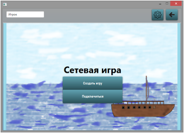
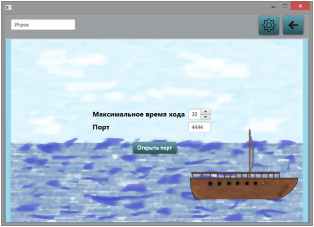
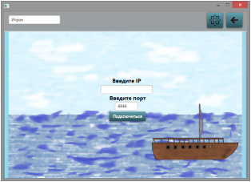
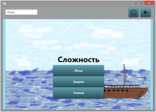
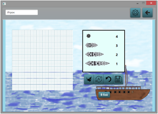
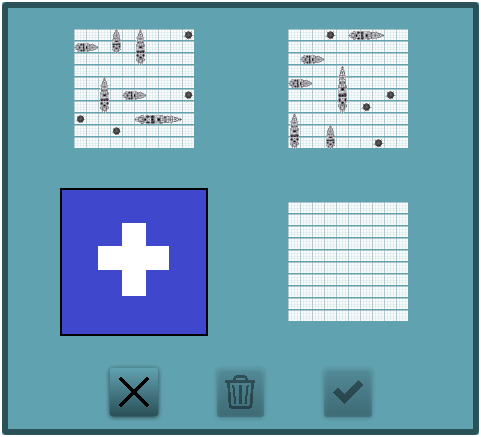

|  |
Дли игры с реальным соперником необходимо выбрать к главном меню кнопку "Играть с человеком" Вслед за этим откроется окно выбора роли в текущем соединении. |
|  |
При выборе "Создать игру" открывается окно с настройкой будущей партии. Для игры необходимо указать минимальное время, отводимое на ход и порт. Для открытия соединения необходимо нажать кнопку "Открыть порт". |
|  | Для того, чтобы присоединиться к игре необходимо нажать кнопку "Подключиться" и ввести IP адрес и порт. |
|  |
Для игры с компьютером необходимо нажать соответствующую кнопку. Игра с компьютером представлена 3 уровнями сложности, каждая из которых реализует свою стретагию игры компьютерного соперника. |
|  | На экране расстановки необходимо расставить корабли на игровом поле в соответствии со своими предпочтениями. Корабли изначально расположены в банке кораблей справа от игрового поля. |
|  | На экране расстановки имеется возможность загрузки заранее сохранённых расстановок и сохранения текущей. Для этого необходимо нажать кнопку с изображением дискеты. Для сохранения необходимо выбрать отмеченную белым плюсом область. Выбор загрузки осуществляется нажатием на интересующую миниатюру. Появляется синяя обводка, обозначающая, что данная расстановка выбрана. Расстановку можно удалить, нажав на кнопку с мусорной корзиной, либо применить, нажав на кнопку с галочкой. |